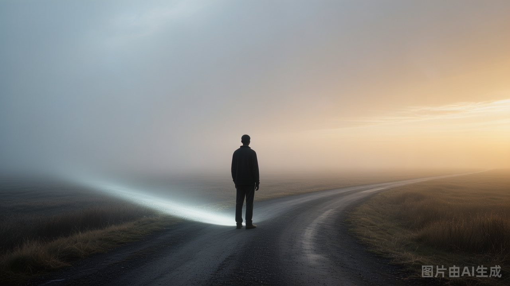
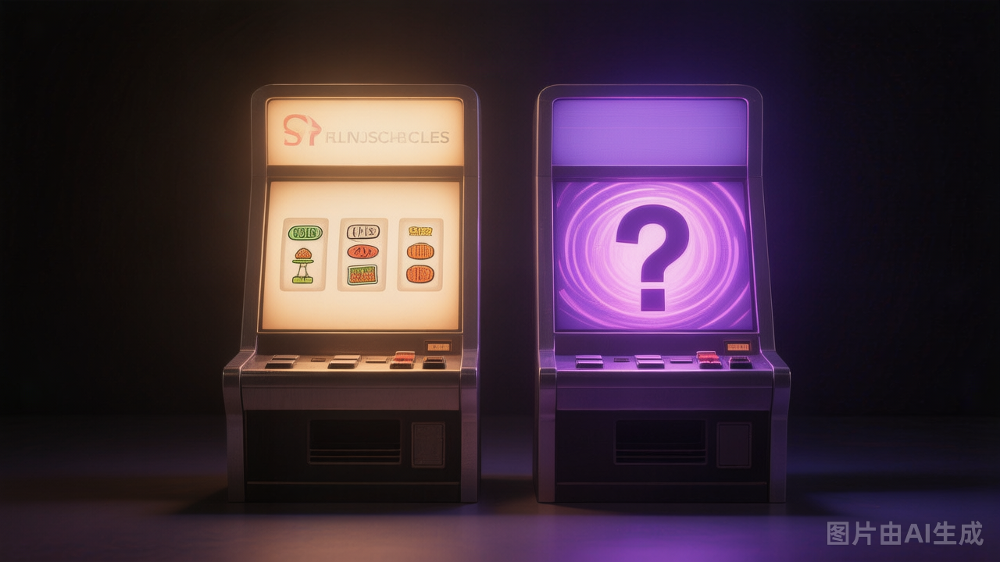
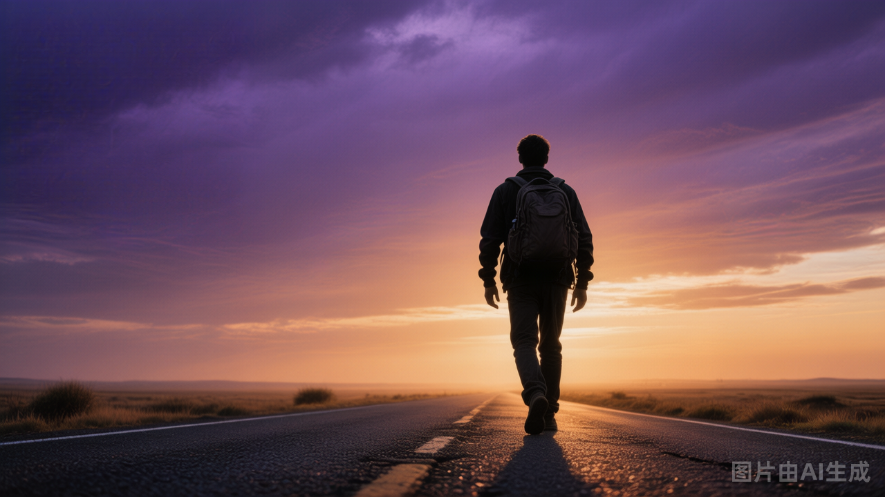

晚上刷到师姐的一条朋友圈，大意是：
很多人宁愿选"确定但越来越差"的路，也不愿去选"充满不确定、但可能更好"的路。
当时心里咯噔一下，太有感触了。
我们这代人——尤其是80、90后——从小接受的，就是一整套"确定性教育"。
学习好，被夸奖。
成绩好，上名校。
上名校，找好工作。
有好工作，赚更多钱。
这一整条人生路径，从头到尾都在传递一个信号：
只要你努力，就会有稳定、确定、可预期的回报。
所以我们从小训练的，从来不是"如何面对不确定"，而是"如何在确定性世界里做到最优"。
但偏偏，这几年世界突然变了。
黑天鹅频出，行业剧烈洗牌，过去那些"努力就有回报"的路径，开始慢慢失效。以前掌握一项技能，可以吃二十年；现在可能三五年，甚至一年就被替代。
最荒诞的是——
我们前半生拼命训练的能力，突然有人告诉你：
"不好意思，这条路以后不通了。"
必须重新学。
重新赌。
重新适应一个"不确定性才是常态"的时代。
这对80、90后来说，其实是很痛的。
因为我们几乎像一代"社会实验品"——
小时候被教育要走一条稳定、正确、安全的路；长大以后，时代却突然要求你拥有冒险精神、接受波动、拥抱变化。
这两套价值观，本身就是冲突的。

后来我想到一个很形象的人性模型。
假设现在有两台机器：
第一台：投入100块，100%返还110块。
第二台：投入100块，50%概率得到200块，50%概率血本无归。
你会选哪台？
绝大多数人，都会选第一台。
哪怕从数学期望看，第二台并不差。
原因很简单——人天然厌恶"失去"。
心理学有个经典概念叫"损失厌恶"：人对"失去100块"的痛苦，远大于"得到100块"的快乐。
所以很多时候，人不是在追求收益最大化，而是在避免痛苦最大化。
真正的问题在于：
如果一个人的前二三十年，都是靠"第一台机器"获利的呢？
他的人生经验，会不断强化一个信念：
稳定，才是对的。确定，才是安全的。
因为过去无数次，他都靠这个逻辑赚到了钱、获得了认可、得到了社会奖励。
于是，"确定性"不只是一个选择，甚至慢慢变成了他的身份认同。
结果突然有一天，规则变了。
原来那台稳定机器，不再稳定了。
100投进去，不再返110。
可能变成109、108。
甚至最后只剩101。
更糟一点，还可能变成99。
但即便如此，很多人还是不愿离开它。
因为另一台机器虽然可能翻倍，却意味着——
"我有可能输光。"
于是人不断给自己找理由：
"至少还有99。"
"至少没归零。"
"总比冒险好。"
但本质上，那已经不是收益逻辑了，而是恐惧逻辑。
今天还看到黄执中说的一句话，特别有意思：
人在做选择时，会故意丑化没选的路，来证明自己选的是对的；可一旦结果不好，又会开始美化当初没选的那条路。
这其实是人的天性。
因为人很难承认：
"我只是做了一个有限信息下的选择。"
我们总想证明自己"绝对正确"。
可现实是——
人生很多时候，根本没有绝对正确的答案。
只有一件事是真的：
你是否能承担这个选择带来的结果。
所以后来我突然想明白：
真正重要的问题，不是"我到底该选A还是B"——
而是：
如果结果最坏，我能不能接受？
如果A的最坏结果你能接受；
B的最坏结果你也能接受；
那其实选哪个，都没那么重要。
因为很多时候，真正困住人的，不是选择本身，而是：
既想得到高收益，又完全无法承受失败。
可成年人的世界里，很多高收益，本来就伴随着波动、风险和不确定。

最后想明白一件事：
所谓成长，也许不是学会"每次都选对"。
而是学会：
在不确定的人生里，依然能够为自己的选择负责。
并且在结果出现后，不过度后悔，不过度自责。
选完，然后承担。
承担之后，再继续往前走。
这可能才是成年人真正的自由。